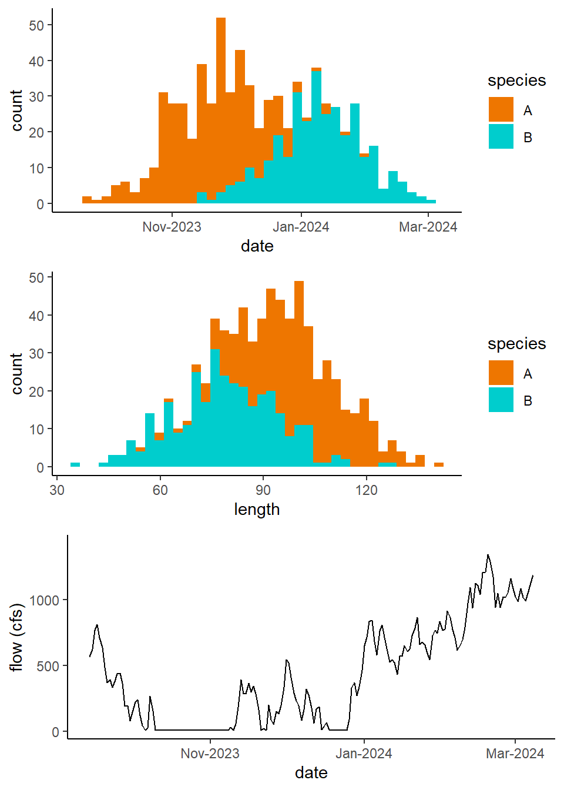
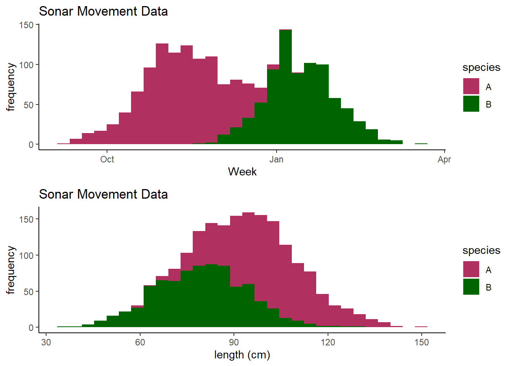

#create new simulated auxiliary length, date, and flow data.
set.seed(42) # For reproducibility
#lengths
lengths_A <- round(rnorm(400, mean=100, sd=15),2)
lengths_B <- round(rnorm(325, mean=80, sd=15),2)
#dates
dates_A <- round(rnorm(400,mean = as.numeric(as.Date("2023-11-20")), sd = 20))
dates_B <- round(rnorm(325,mean = as.numeric(as.Date("2024-01-10")), sd = 22))
#make dataframe
aux_data <- data.frame(
length = c(lengths_A, lengths_B),
date = round(as.Date(c(dates_A,dates_B), origin = "1970-01-01")),
species = factor(rep(c("A", "B"), times=c(400,325)))
)
#flow
start_date <- as.Date(paste(year(min(aux_data$date)),"01","01",sep="-"))
end_date <- as.Date(paste(year(max(aux_data$date)),"12","31",sep="-"))
dates <- seq.Date(start_date, end_date, by = "day")
days_in_period <- length(dates)
max_flow <- 1000 # maximum flow in cfs
min_flow <- 100 # minimum flow in cfs
# Create a sinusoidal flow pattern to simulate seasonal variation
flow_pattern <- (max_flow - min_flow) / 2 *
sin(2 * pi * (1:days_in_period -20) / 365) +
(max_flow + min_flow) / 2
# Create a random noise process using an auto-regression model
# rho=level of autocorrelation
rho <- 0.9 # autocorrelation parameter;
#higher values give smoother transitions
ac_noise <- numeric(days_in_period)
ac_noise[1] <- rnorm(1, mean = 0, sd = 100) # initial noise value
for (i in 4:days_in_period) {
ac_noise[i] <- rho * ac_noise[i - 1] + rnorm(1, mean = 0, sd = 100)
}
flow_data <- flow_pattern + ac_noise
# Ensure no flow goes below the minimum flow
flow_data[flow_data < 10] <- 10
# Create a dataframe for plotting and analysis
flow_df <- data.frame(
date = as.Date(dates),
Flow_cfs = flow_data
)
aux_data<-aux_data%>%
dplyr::left_join(flow_df,by="date")Binomial Regression
The more auxiliary data we have available to us, the more complex, and hopefully accurate, of a model we can use to assign species to our sonar data. Let’s add some variables to our auxiliary data set, notably fish length (cm) and daily flow data. For our example we’ll just use one year of simulated auxiliary data, but you could use multiple years of auxiliary data to model speciation. We’ll use similar methods as before, and can visualize the simulated data that we’ll use here:

We can use this auxiliary data to build a binomial logistic regression model, in which our response variable is the probability of the observed fish being one of two species. This logistic regression method can allow us to incorporate additional covariates beyond just date of capture. For our auxiliary data we can represent this model with the following equation:
\[ P(y=A)=\frac{1}{1+e^{\beta_0+\beta_1*x_{1,y}+\beta_2*x_{2,y}+....+\beta_M*x_{M,y}}} \tag{1}\]
Where \(P(y=A)\) is the probability of a given fish \(y\) being species \(A\), \(\beta\) is the regression coefficient for a given explanatory variable, and \(M\) is the total number of explanatory variables. Here we’ll be using three potential explanatory variables: date of observation, fish length (cm), and average daily water flow (cfs). This is similar to methods outlined in Metheny (2012), where models were developed using live fish observations from the USGS Cooperative Fish and Wildlife Research Unit on Redwood Creek from 2009-2010.
We can build this model and validate it before we attempt to assign species to any sonar data. We can start by assigning a species index to each record, of 1 if the species was A, 0 if B. Then we can split our data into a “training” data set to build the model on, and another data set to test the model on. We’ll use the createDataPartition() function from the caret package to split our auxiliary data into the train_data data frame comprised of 70% of our records, and a test_data data frame comprising the other 30%.
aux_index<-aux_data%>%
mutate(species_index=ifelse(aux_data$species=="A",1,0))
# Split data into training and testing sets
set.seed(123) #set seed for repeatability
#create training data set with 70% of data
train_index <- createDataPartition(aux_index$species,
p = 0.7, list = FALSE)
train_data <- aux_index[train_index, ]
test_data <- aux_index[-train_index, ]Now that we have our training and testing data sets, we can build our model with the glm() function, structuring it off of Equation 1, and setting as a binomial regression by setting family=binomial.
model_1 <- glm(species_index ~ as.numeric(date) + length + Flow_cfs,
data = train_data, family = binomial)
summary(model_1)
Call:
glm(formula = species_index ~ as.numeric(date) + length + Flow_cfs,
family = binomial, data = train_data)
Deviance Residuals:
Min 1Q Median 3Q Max
-2.45746 -0.13241 0.03463 0.23579 2.96957
Coefficients:
Estimate Std. Error z value Pr(>|z|)
(Intercept) 2.226e+03 2.656e+02 8.383 < 2e-16 ***
as.numeric(date) -1.134e-01 1.350e-02 -8.399 < 2e-16 ***
length 8.964e-02 1.423e-02 6.299 2.99e-10 ***
Flow_cfs -1.264e-03 9.319e-04 -1.356 0.175
---
Signif. codes: 0 '***' 0.001 '**' 0.01 '*' 0.05 '.' 0.1 ' ' 1
(Dispersion parameter for binomial family taken to be 1)
Null deviance: 698.91 on 507 degrees of freedom
Residual deviance: 194.90 on 504 degrees of freedom
AIC: 202.9
Number of Fisher Scoring iterations: 7If we look at the summary output of our model, we can see that both length and date have significant effects on the probability of a fish being species A or species B. The flow covariate was not significant in species ID, so we can actually drop it from our model moving forward.
model_1 <- glm(species_index ~ as.numeric(date) + length,
data = train_data, family = binomial)We then use the predict() function to predict the species assignments of the test_data using the model we created. This assigns a probability of each test record being species A, which we can then round and assign a value of 1 if that the probability is greater then 50%, and 0 otherwise. This process is a “threshold” assignment, in which we categorize our predicted probabilities into binary classes. Then those predictions are rejoined to the test_data.
# Predictions
predictions <- predict(model_1, newdata = test_data, type = "response")
predicted_classes <- ifelse(predictions > 0.5, 1, 0)
species_predicted<-ifelse(predicted_classes==1,"A","B")
test_data<-test_data%>%cbind(species_predicted)We can now compare the predicted species for the test_data to the actual species, and see how accurate our species identification was using this model.
# Accuracy
accuracy <- sum(species_predicted == test_data$species) / nrow(test_data)
print(paste("Accuracy:", round(accuracy, 3)))[1] "Accuracy: 0.917"Above we can see our estimate accuracy in determining if a given fish was species A or B was 0.917. Of course, for our purpose we are not necessarily interested in whether or not a given sonar fish image is one species or another. What we are most interested in is abundances of each species based on our sonar data.
To figure out how much error there is in our estimates of the abundance for each species we can find the true count for each species in our test_data and compare it to the abundance estimate based on the species predictions from the model.
Ntrue_A<-sum(test_data$species=="A")
Ntrue_B<-sum(test_data$species=="B")
Nest_A<-sum(test_data$species_predicted=="A")
Nest_B<-sum(test_data$species_predicted=="B")
error_A <- abs(Nest_A - Ntrue_A)
error_B <- abs(Nest_B - Ntrue_B)
rel_error_A <- error_A / Ntrue_A
rel_error_B <- error_B / Ntrue_B
MAPE <- mean(c(rel_error_A, rel_error_B)) * 100We see above that testing our model shows an error of 3.729 % in the our species abundance predictions.
Next we’ll want to do the above many more times in an iterative process similar to the bootstrapping we’ve already done, and we can use our average relative error in abundance estimates as our benchmark.
set.seed(Sys.time()) #reset seed
iterations=100
results<-data.frame()
for(i in 1:iterations){
train_index <- createDataPartition(aux_index$species,
p = 0.7, list = FALSE)
train_data <- aux_index[train_index, ]
test_data <- aux_index[-train_index, ]
model_iter <- glm(species_index ~ as.numeric(date) + length,
data = train_data, family = binomial)
predictions <- predict(model_iter,
newdata = test_data, type = "response")
predicted_classes <- ifelse(predictions > 0.5, 1, 0)
species_predicted<-ifelse(predicted_classes==1,"A","B")
test_data<-test_data%>%
cbind(species_predicted<-ifelse(predicted_classes==1,"A","B"))
accuracy <- sum(species_predicted == test_data$species)/nrow(test_data)
Ntrue_A<-sum(test_data$species=="A")
Ntrue_B<-sum(test_data$species=="B")
Nest_A<-sum(test_data$species_predicted=="A")
Nest_B<-sum(test_data$species_predicted=="B")
error_A <- abs(Nest_A - Ntrue_A)
error_B <- abs(Nest_B - Ntrue_B)
rel_error_A <- error_A / Ntrue_A
rel_error_B <- error_B / Ntrue_B
MAPE <- mean(c(rel_error_A, rel_error_B)) * 100
d<-data.frame("accuracy"=accuracy,"MAPE"=MAPE)
results<-results%>%rbind(d)
}Based on the above model training and iterative testing, we see our model predicted the species of our test data with an average accuracy of 0.911 and an average error in abundance estimates of 3.113 %.
We’ve trained and tested our model, and have some benchmarks of accuracy in species ID and abundance estimates. Next we’ll have to generate a new sonar data set for this example that will incorporate length and flow data linked to our sonar counts. We can simulate this data similar to how we’ve done for our prior two examples here:
#Simulate some example sonar data
set.seed(123) # For reproducibility
#lengths
lengths_A <- round(rnorm(1000, mean=100, sd=15),2)
lengths_B <- round(rnorm(850, mean=80, sd=15),2)
#dates
dates_A <- round(rnorm(1000,mean=as.numeric(as.Date("2023-11-10")),sd=22))
dates_B <- round(rnorm(850,mean=as.numeric(as.Date("2024-01-12")),sd=20))
#make dataframe
sonar_data <- data.frame(
length = c(lengths_A, lengths_B),
date = round(as.Date(c(dates_A,dates_B), origin = "1970-01-01"))
)
#join in flow data
sonar_data<-sonar_data%>%
dplyr::left_join(flow_df,by="date")Next we’ll retrain our model using the entire auxiliary data set.
model_1<-glm(species_index ~ as.numeric(date) + length + Flow_cfs,
data = aux_index, family = binomial)Based on the summary output for our model, we see that length and date are both strong predictors of species, while the flow covariate is not significant in predicting species.
Next we can use our model_1 to assign species to our sonar data.
predictions <- predict(model_1, newdata = sonar_data, type = "response")
predicted_classes <- ifelse(predictions > 0.5, 1, 0)
sonar_predicted<-sonar_data%>%cbind(predicted_classes)
sonar_predicted$species=ifelse(sonar_predicted$predicted_classes==1,"A","B")Plot the speciation results.
`stat_bin()` using `bins = 30`. Pick better value with `binwidth`.
`stat_bin()` using `bins = 30`. Pick better value with `binwidth`.
N_est3<-sonar_predicted%>%
group_by(species)%>%
tally()Our final estimates of abundance in this example are 1038 for species A and 812 for species B.
Estimating uncertainty
We can utilize a bootstrapping method again to incorporate variance in our sonar data and estimate confidence intervals for our final species abundance estimates. We’ll do this by iteratively rebuilding our logistic model by resampling our sonar data. The following chunk uses a for-loop to sample, with replacement, our sonar_data, and then assign species using model_1 to the new data set. We then calculate new estimates of abundance for each species with the same methods we just used.
#bootstrapping boogie
iterations<-100
results<-data.frame()
for(j in 1:iterations){
d <- sonar_data[sample(nrow(sonar_data), replace = TRUE), ]
p_boot <- predict(model_1, newdata = d, type = "response")
p_classes <- ifelse(p_boot > 0.5, 1, 0)
sonar_boot<-sonar_data%>%cbind(p_classes)
sonar_boot$species=ifelse(sonar_boot$p_classes==1,"A","B")
N_A<-length(which(sonar_boot$species=="A"))
N_B<-length(which(sonar_boot$species=="B"))
iter<-data.frame('iteration'=j,"A"=N_A[1],"B"=N_B[1])
results<-results%>%rbind(iter)
}We can use the results output from above to calculate our 95% confidence intervals using the quantile() call:
#iteration total estimates
iter_totals<-results%>%
group_by(iteration)%>%
dplyr::summarise(A=sum(A),
B=sum(B))
#bounds
A_stats <- quantile(iter_totals$A, probs = c(0.025, 0.975))
B_stats <- quantile(iter_totals$B, probs = c(0.025, 0.975))The above results show that our estimate of total abundance of species A in our sonar counts is 1038 with 95% CI [993, 1069] and a count of 812 with 95% CI [782, 858] for species B.
Logistic regression is a fairly simple method that can incorporate multiple covariates to help in assigning species to sonar counts. A good advantage of this method is we can train and test our logistic model with our auxiliary data to estimate accuracy, and again bootstrap the sonar data to assign confidence intervals. Key assumption for the binomial logistic regression include:
All fish being speciated either one of two species.
The dates of run times and lengths of fish observed in the auxiliary data are representative of the fish observed in sonar imaging.
References
Metheny, Matthew. 2012. “Use of Dual Frequency Identification Sonar to Estimate Salmonid Escapement to Redwood Creek, Humboldt County.” PhD thesis, Humboldt State University.